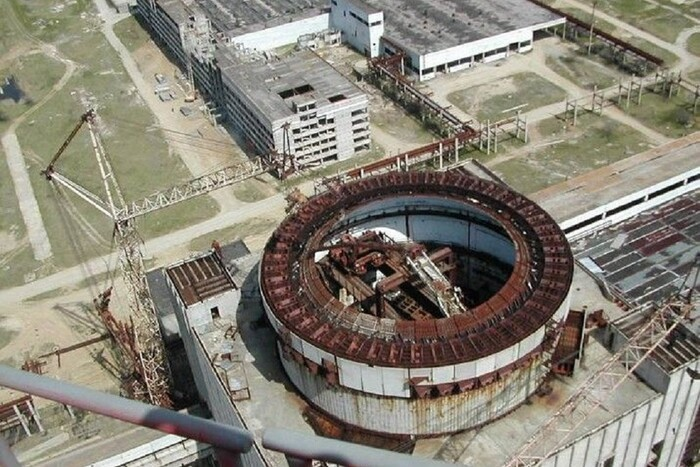

Визначні пам'ятки та архітектура 🏛️
Головні об'єкти локації — комплекс недобудованих 9-поверхових панельних будинків, будівля колишнього універмагу, школа та закинутий промисловий майданчик недобудованої Чигиринської АЕС.

Кухня та гастрономічні спогади 🍲
Оскільки Орбіта розташована поруч із сусіднім селом Вітове та Чигирином, після прогулянки бетонними кварталами обов'язково варто скуштувати місцеву юшку з дніпровської риби та домашні пиріжки в козацькій столиці неподалік.
Культура та історія краю 📖
Містечко проєктували в 1970-х роках як сучасний супутник енергетичного гіганта на Черкащині. Проте після перегляду енергетичної програми будівництво згорнули, і більшість жителів роз'їхалися, залишивши по собі унікальний пам'ятник незавершеної епохи.

Особисті враження та віртуальний маршрут 🗺️
На відміну від суворої закритої зони ЧАЕС, Орбіта відчувається більш світлою та меланхолійною. З верхніх поверхів відкривається захопливий краєвид на воду, де особливо гарно зустрічати захід сонця.